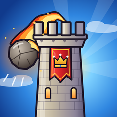

Hold the Keep
Endless castle defence for iPhone. No ads, no in-app purchases.
Support
Found a bug, have an idea, or need help? Email
pat_lee_3@hotmail.com and include your iPhone model and iOS version.
How to play
- Drag back on the catapult at the bottom of the screen and let go to fire. Pull further to throw further.
- Switch ammo with the buttons along the bottom: nets catch raiders you can tap to recruit.
- Between waves, spend gold in the shop: build and raise towers, upgrade the walls and catapult, and train your troops.
- Guard all three wall sections. If any one of them falls, the keep falls.
Questions
Where is my progress saved? On your iPhone only. Deleting the app deletes it.
The Rankings button says to sign in. Sign in to Game Center in Settings → Game Center, then reopen the game.
Privacy policy